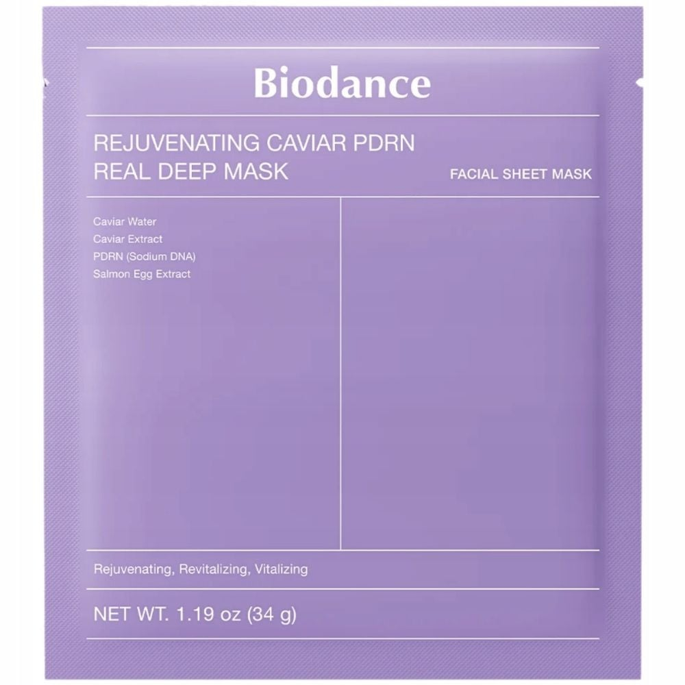
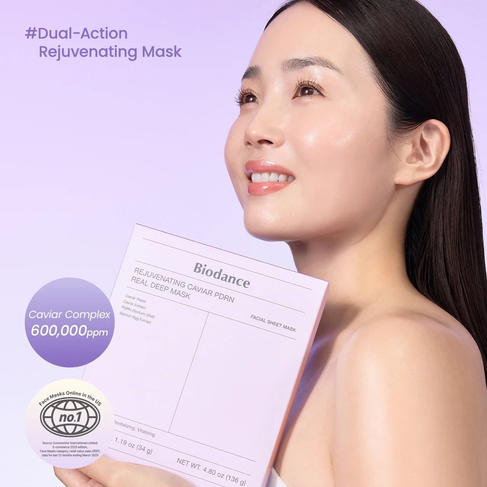
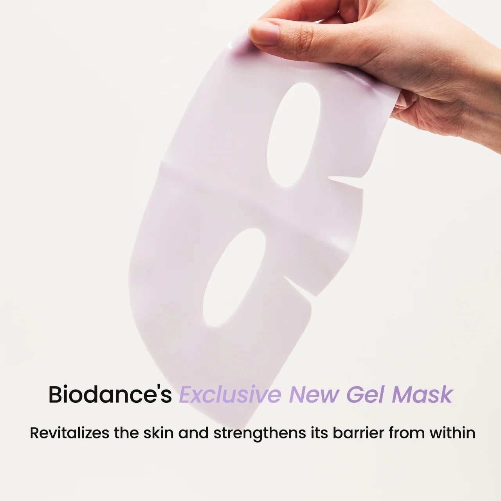
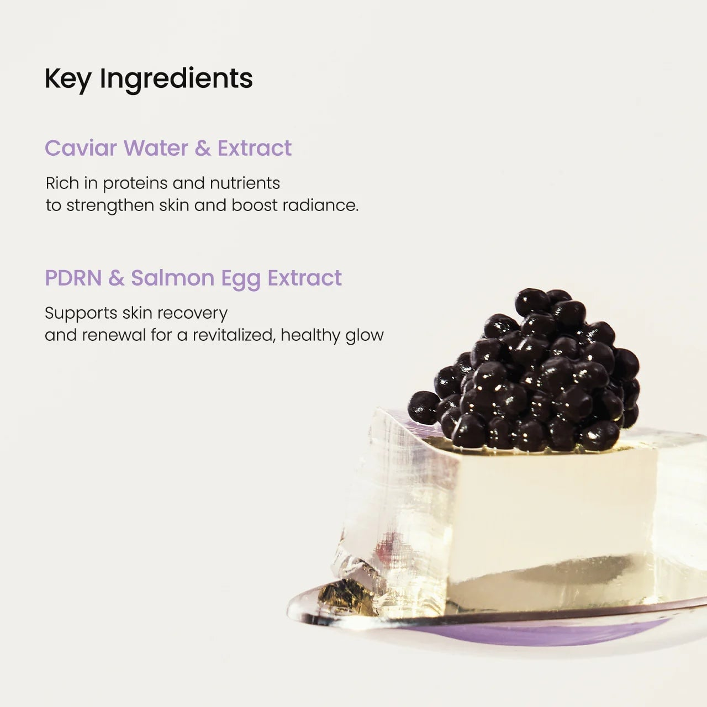
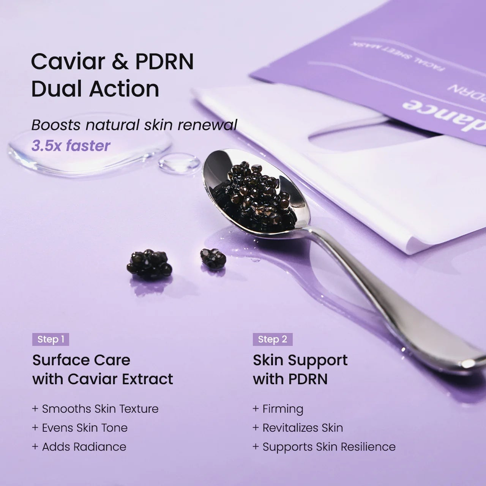
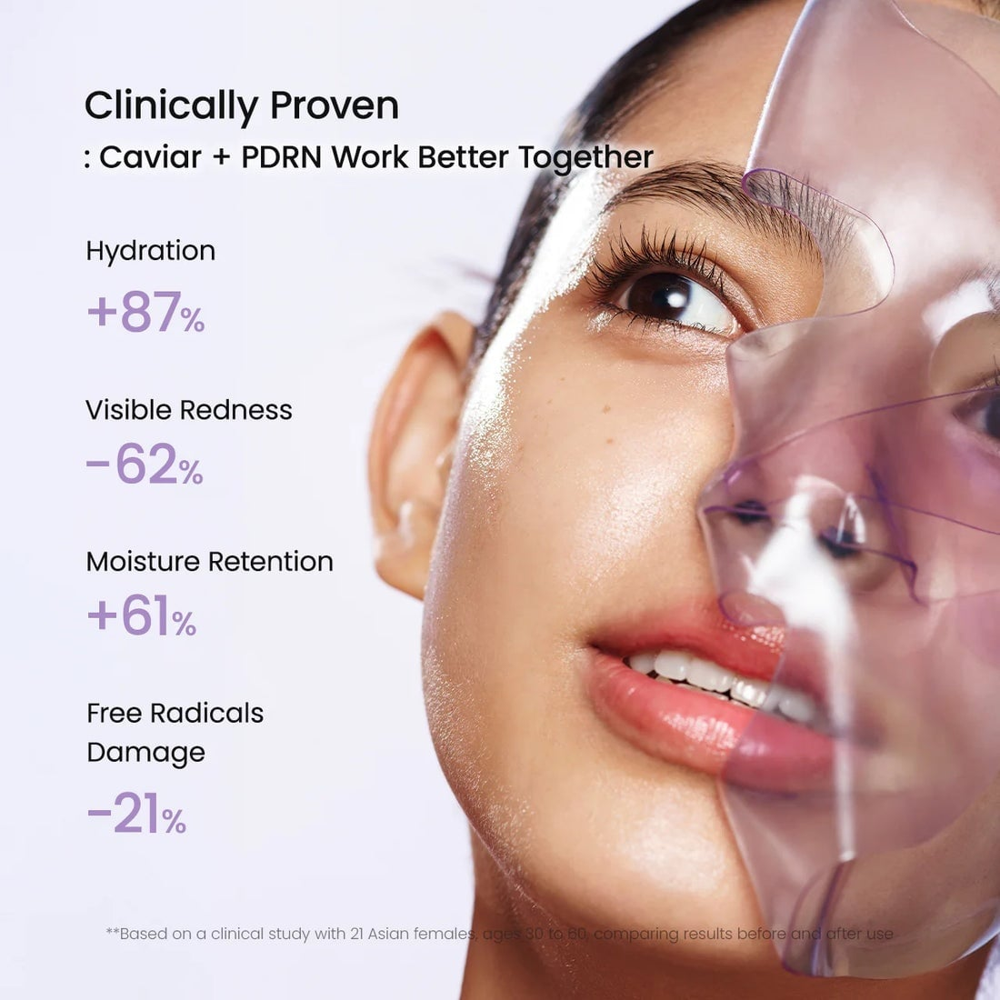
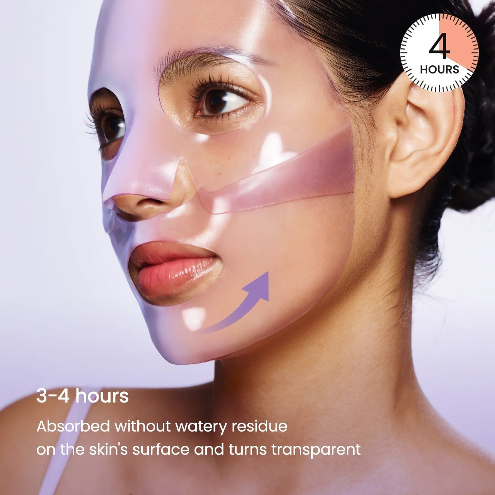

<div> <table style="border-collapse: collapse; width: 100%;" border="1"><colgroup><col style="width: 50%;"><col style="width: 50%;"></colgroup> <tbody> <tr> <td> <div><span style="color: #000000; font-size: 14pt;"><strong>Biodance Masca de intinerire profunda cu caviar PDRN</strong></span></div> <div><span style="color: #000000; font-size: 14pt;"><strong>34g</strong></span></div> <div><span style="color: #000000; font-size: 14pt;">Incearca masca faciala Biodance Rejuvenating Caviar PDRN Real Deep Mask, un tratament intensiv de lux conceput pentru a intineri, revitaliza si reda vitalitatea tenului obosit, oferind rezultate vizibile si ingrijire profesionala direct la tine acasa.</span></div> </td> <td></td> </tr> <tr> <td></td> <td><span style="color: #000000; font-size: 14pt;">Alege calitatea numarul 1 si rasfata-ti tenul cu setul Biodance ce contine complex de caviar 600.000 ppm. Ofera pielii tale o hidratare profunda si o actiune duala avansata pentru un aspect radiant si intinerit.</span></td> </tr> <tr> <td><span style="color: #000000; font-size: 14pt;">Descopera noua masca exclusiva tip gel de la Biodance, creata dintr-o textura inovatoare care se adapteaza perfect conturului fetei. Aceasta revitalizeaza pielea in profunzime si ii intareste bariera protectora naturala de la interior.</span></td> <td></td> </tr> <tr> <td></td> <td><span style="font-size: 14pt; color: #000000;">Ingredientele cheie precum apa si extractul de caviar sunt bogate in proteine esentiale, in timp ce PDRN-ul si extractul din ou de somon sustin recuperarea celulara pentru un ten sanatos, neted si plin de stralucire.</span></td> </tr> <tr> <td><span style="font-size: 14pt; color: #000000;">Sistemul cu actiune duala bazat pe caviar si PDRN stimuleaza reinnoirea pielii de 3,5 ori mai repede. Pasul 1 ingrijeste suprafata imbunatatind textura, iar Pasul 2 ofera fermitate si sustine rezistenta cutanata in profunzime.</span></td> <td></td> </tr> <tr> <td></td> <td><span style="font-size: 14pt; color: #000000;">Dovedit clinic pentru eficienta sa, acest tratament lasat sa actioneze 3-4 ore pana devine transparent creste hidratarea cu 87%, reduce roseata vizibil cu 62% si imbunatateste considerabil retentia de umiditate a tenului.</span></td> </tr> <tr> <td> <p data-path-to-node="0"><span style="color: #000000; font-size: 14pt;">Bucura-te de un tratament inovator cu masca Biodance, conceputa sa actioneze timp de 3-4 ore. Aceasta se absoarbe complet in piele fara a lasa reziduuri apoase la suprafata si devine treptat transparenta, oferind tenului tau un aspect revitalizat si profund hidratat.</span></p> </td> <td></td> </tr> </tbody> </table> </div>